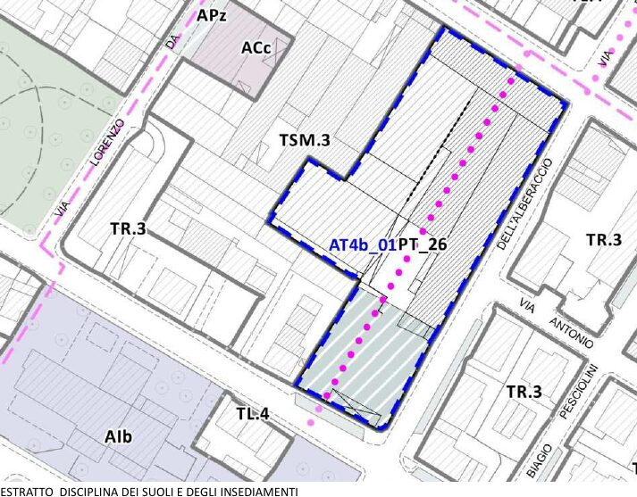

In questa pagina
Piano attuativo
Livello di verifica: LR 65/2014 (testo al 08/09/2025), artt. 10, 95, 107-112 e 115-121, controllati sul testo. Caso di Prato dalla lettura della scheda AT4b_01 del PO 2019 (versione aggiornata dalla variante pubblicata sul BURT n. 13 del 01/04/2026).
In una riga. È il piano di dettaglio che attua una previsione del PO su un'area: disegna edifici, strade e spazi pubblici e, con la convenzione, fissa che cosa cede e realizza chi costruisce.
Che cosa contiene
Contenuti (art. 109 c. 1).
| Lett. | Contenuto |
|---|---|
| a | Opere di urbanizzazione primaria e secondaria, a livello di progetto di massima |
| b | Assetto planivolumetrico, con i prospetti su strade e piazze |
| c | Spazi per opere e impianti di interesse pubblico |
| d | Edifici da recuperare, con le categorie d'intervento; tipologie dei nuovi edifici |
| e | Eventuali unità di intervento coordinate |
| f | Proprietà da espropriare o vincolare, con i dati catastali |
| g | Inserimento nel contesto: connessioni ciclopedonali ed ecologiche, margine con il territorio rurale |
| h | Schema di convenzione |
Allegati (art. 109 c. 2): ricognizione del quadro conoscitivo, norme tecniche di attuazione, disposizioni sulla perequazione o compensazione.
I tipi (artt. 115-120). La LR 65 li chiama piani attuativi «comunque denominati» (art. 107 c. 1).
| Tipo | Iniziativa | Tratto proprio | Art. |
|---|---|---|---|
| Piano di lottizzazione | Privata | Convenzione con cessioni, opere di urbanizzazione, termini fino a dieci anni, garanzie | 115 |
| Piano particolareggiato | Pubblica | Attua le trasformazioni del PO; vale come dichiarazione di pubblica utilità | 116 |
| Piano per l'edilizia economica e popolare | Pubblica | Aree per l'edilizia sociale, fino al 70% del fabbisogno decennale | 117 |
| Piano per gli insediamenti produttivi | Pubblica | Aree per attività produttive, espropriate e cedute in diritto di superficie o in proprietà | 118 |
| Piano di recupero | Pubblica o privata | Zone di degrado individuate dal PO; unità minime di intervento | 119 |
| Programma complesso di riqualificazione insediativa | Pubblica e privata | Assimilato ai piani attuativi; pluralità di funzioni e operatori | 120 |
Che effetti ha
- Attua il PO (art. 107 c. 1): ne usa le quantità e le regole, non le crea. Vedi Dimensionamento.
- Validità fino a dieci anni, fissata con l'approvazione. Scaduto il termine, il piano è inefficace per la parte non attuata, ma restano gli allineamenti e le prescrizioni di zona (art. 110 cc. 1, 3, 4).
- Pubblica utilità: l'approvazione dichiara la pubblica utilità delle opere pubbliche previste (art. 110 c. 2).
- Decadenza nel PO: se il piano attuativo non è approvato entro i cinque anni del PO, la previsione decade (art. 95 c. 9). Vedi Piano operativo.
Chi lo fa e come si forma
Il procedimento proprio (art. 111), per il piano conforme al PO:
- per l'iniziativa privata, entro 60 giorni dalla proposta completa il Comune comunica i tempi dell'adozione (c. 2);
- adozione del Comune; trasmissione a Provincia o Città metropolitana; deposito per 30 giorni dall'avviso sul BURT, con osservazioni di chiunque (c. 3);
- approvazione motivata sulle osservazioni (c. 4);
- efficacia dalla pubblicazione dell'avviso di approvazione sul BURT; se non ci sono osservazioni, dall'avviso che ne dà atto (c. 5).
Consorzio (art. 108). I proprietari che rappresentano la maggioranza assoluta del valore catastale dell'area possono presentare il piano con lo schema di convenzione. Chi non aderisce, dopo diffida, può essere espropriato a spese dei firmatari.
Varianti al piano attuativo (art. 112). Con un solo atto, se non aumentano superficie edificabile e volumi, non cambiano il perimetro e non riducono gli standard.
Variante al PS o al PO insieme al piano attuativo (art. 107 c. 3): si possono adottare e approvare contestualmente.
Sempre a piano attuativo (art. 107 c. 4): i crediti edilizi della compensazione e la ristrutturazione urbanistica nei casi indicati.
A margine
Perché esiste: La città pubblica, nella sezione Storia e teoria.
Un caso reale
Prato, PO 2019, scheda AT4b_01 (ex Lanificio Rosati, via Pistoiese), nell'elaborato 04.1. Un complesso produttivo in parte dismesso nel Macrolotto Zero, tutelato come «produttivo tipologico». La scheda del PO prevede un piano di recupero e ne fissa i parametri:
- superficie dell'area 7.985 mq; superficie fondiaria 6.332 mq;
- superficie edificabile di progetto pari all'80% di quella esistente;
- funzioni con quote vincolanti: residenza fino al 20%, produttivo e commercio fino al 40% ciascuno;
- 1.653 mq di parcheggio pubblico da cedere: esattamente l'area fuori dal lotto fondiario (7.985 − 6.332);
- prescrizioni di progetto: conservare gli edifici storici, riproporre la corte, aprire un percorso pedonale dal portale alla strada sul retro.

Finché non c'è la convenzione, sugli edifici esistenti è ammessa solo la manutenzione (NTA, art. 80 c. 2). Lettura completa, con lo schema delle superfici: Lettura di Prato.
Da non confondere
- Piano attuativo e progetto unitario convenzionato (PUC). Il PUC (art. 121) serve per previsioni semplici in aree già urbanizzate: non è un piano, ma un progetto con convenzione che porta al titolo edilizio.
- Piano attuativo e permesso di costruire convenzionato. Il secondo è un titolo edilizio con convenzione, non un atto di pianificazione.
- Validità del piano attuativo e del PO. Il PO dà cinque anni per approvare il piano attuativo; il piano approvato ha poi fino a dieci anni per essere realizzato.
Per l'Esame di Stato
Questa scheda è la sede di riferimento del concetto. Nel Manuale compare anche in: Lettura di Prato. Elenco generato dall'inventario: «la definisce di nuovo» segnala una seconda definizione, da ridurre a un rimando.
Dispense 7
- D0 La logica delle norme: 1 paragrafo
- D1 Storia e quadro normativo: 1 paragrafo
- D2 LR 65: principi e strumenti: 5 paragrafi
- D3 Procedimenti: 4 paragrafi · la definisce di nuovo
- D4 Attuazione, standard, vincoli: 7 paragrafi · la definisce di nuovo
- D5 Paesaggio: 1 paragrafo · la definisce di nuovo
- D6 VAS, VIA, VINCA: 2 paragrafi
Kit, metodi, catalogo 3
- Competenze: 1 paragrafo
- Catalogo delle tracce: 2 paragrafi
- Metodo: Piano attuativo e dimensionamento: 1 paragrafo · la definisce di nuovo
Prove svolte 4
- Traccia 2024 T1: 3 paragrafi · la definisce di nuovo
- Traccia 2024 T2: 3 paragrafi
- Traccia 2025 I T2: 2 paragrafi
- Traccia 2026 I T2: 6 paragrafi · la definisce di nuovo
Fonti
LR 65/2014, testo al 08/09/2025: artt. 10, 95, 101, 107-112, 115-121. Scheda AT4b_01 e NTA del PO di Prato 2019, citate nella lettura.